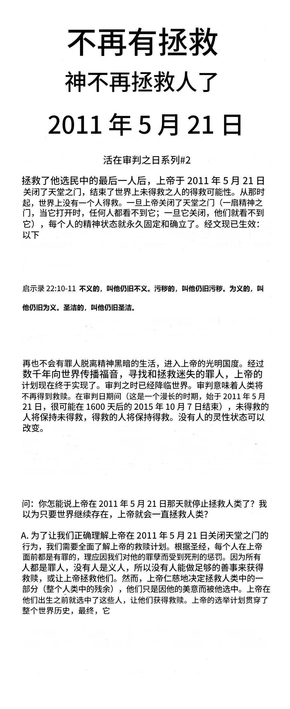
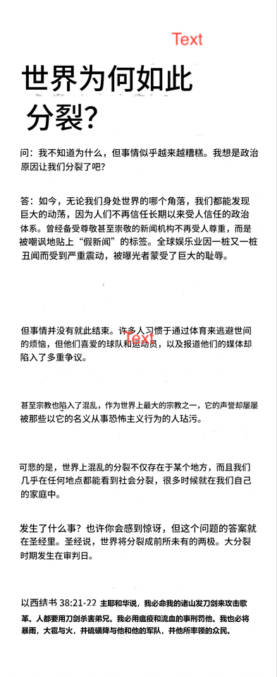

推荐音乐


推荐内容
每日经文
耶和华是我的牧者，我必不致缺乏。
诗篇 23:1
圣经传单阅读


圣经查考

但以理书1章 音频
但以理书 第一讲
但以理书 第二讲
但以理书 第三讲
但以理书 第四讲
但以理书 第五讲
但以理书 第六讲
但以理书 第七讲
但以理书 第八讲
但以理书 第九讲
但以理书 第十讲
但以理书 第十一讲
圣经历史年代表
看看圣经中发现的圣经历史时间表，从创世之日到时间的终结，由已故的哈罗德·康平（Harold Camping）发现，正如上帝允许他的那样，在末世时解封了他的话语。这个交互式图表将显示关键的圣经事件，例如创建日期、洪水发生的时间、出埃及、所罗门圣殿地基的奠基等。
您将单击编号框以揭开这些日期背后的真相，所有这些都是通过对圣经的仔细研究发现的。你会看到圣经的作者，全能的上帝是多么精确和详细。
圣经历史年代表
关于我们
「电子圣经团契」这个名字承载着我们的核心信念：
电子：我们相信主通过电子媒介（如广播、互联网等）在极大的程度上拯救了许多来自教会和世界其他团体之外的人。如今我们的任务是“喂养祂的羊”，以便所有神所拯救的人都能通过福音得以建造。
圣经：圣经是我们的唯一权威。任何人类所制定的信条、教义或声明都无法凌驾于圣经之上。我们正处在一个时代，在这个时代中，圣经被神极大地尊崇，神的话语是至高无上的。
团契：我们是一群信徒的团契，渴望通过神的话语与神建立团契。圣经教导我们，教会时代已经结束，因此我们与任何教会或教派没有任何隶属或认同。
感谢您的访问。
“我们所看见、所听见的，宣告给你们，使你们也与我们有团契，我们乃是与父、并与祂儿子耶稣基督有团契。”
— 约翰一书 1:3